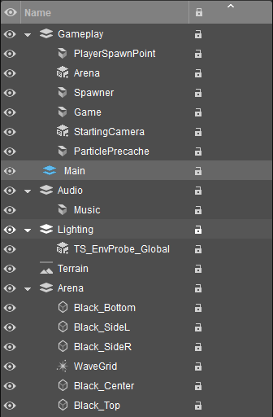
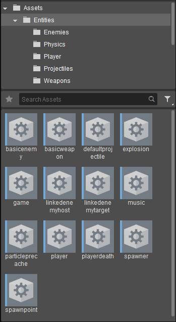
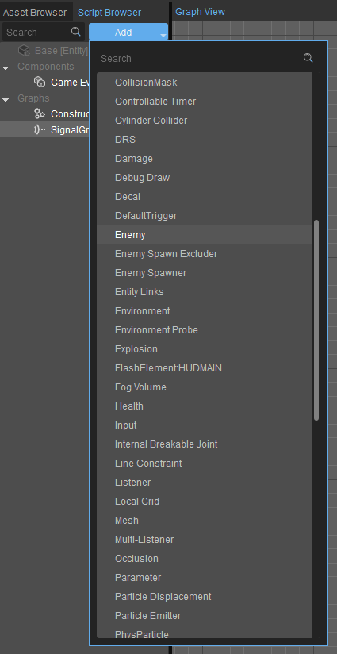

Overview
The GalaxSys sample project includes several assets which can be used for your own projects in CRYENGINE, along with a suite of extra components to ease development of your game logic. The idea is that you can use this sample project as a base for similar games, by leveraging the added components or simply expanding upon the current framework provided.
You can also delve into the code behind this project to learn about various systems and how to interact and expose various systems used in CRYENGINE. The purpose of this document is to provide a high-level overview of the project's general design and make-up.
Level Layers
The first thing you may notice when opening the level is that the layers do not contain many objects.

Level layers
Gameplay
This layer is used to hold entities that contain logic, or that are required in terms of stable gameplay.
- PlayerSpawnPoint: This Entity controls the location and spawn logic of the player.
- Arena: The Arena Entity uses the Arena component to define the playable area, and also provides an Auto-Reflect list which can automatically bounce objects off the edge, inside the boundary.
- Spawner: The Spawner controls the enemy spawn logic. Here you can define which enemies can be spawned and inside the Entity itself (via Schematyc), you control when and how the enemies are spawned.
- Game: The Entity is a special Entity that houses the overall game logic. It controls the keybinds for starting the game, showing the UI, tracking and updating the timer and score counts.
- StartingCamera: This is the camera used at the start of the game, before the player spawns and when the "Press Start or Enter" text is displayed. The player camera overrides this camera automatically once the player spawns.
- ParticlePrecache: The ParticlePrecache Entity houses several particle effect components, one for each of the particle effects used in the game that are not statically present in the level (eg. the WaveGrid is statically placed). Each particle effect is "Primed"; this allows the particle system to load the required assets for each of the particles during level load, rather than during runtime which can cause performance spikes.
Audio
The Audio layer simply houses the Music Entity.
- Music: This Entity simple controls the music when starting the level. Of course, more complicated setups can be created using the Schematyc system for different effects at different times.
Lighting
This layer holds the Environment Probe.
- TS_EnvProbe_Global: The Environment Probe. This is used to generate the cubemaps for the level, which can be seen in the reflections on the cockpit shroud of the player ship.
Arena
The Arena layer holds all the static objects in the level, including the wave grid particle effect.
- Black_*: These objects are simply used to add a "Fade" effect along the edges of the wave grid. We also use a black floor to prevent the skybox stars from interfering with the wave grid particle effect.
- WaveGrid: The WaveGrid Entity is the most prominent effect of the GalaxSys sample. It is a dynamic grid of particles that can react to physical effects such as wind.
Entities
Most of the Entities in this project consist of Visual Scripting Entities, which can be crafted using the Visual Scripting feature of CRYENGINE.
In CRYENGINE 5.6, these entities are known as Schematyc Entities that use the experimental version of the Visual Scripting system. Here we briefly look at each Scripting Entity without going into too much detail. If you want to know more about how these Entities interact with each other, we advise opening them up and playing around with them.

Entity Assets
Enemies
- basicenemy: This is the first enemy you encounter when playing the sample project.
- linkedenemyhost: This Entity is "half" of the 2nd enemy you encounter. It acts as the primary logic behind the 2nd enemy and also controls the spawning of its partner.
- linkedenemytarget: This Entity is the 2nd "half" of the second enemy. Essentially, it is simply a target for the linkedenemyhost Entity so that the electric particle effect can seem "attached" to each part. For the particle effect, the host must have an Entity Link named "target" linked to the target Entity. This tells the particle effect where to end.
- spawner: The spawner Entity controls the enemy types and spawn timing.
Physics
- explosion: This Entity is a collection of components that can physically affect other dynamic objects; it also has a particle effect that activates immediately upon spawning.
- playerdeath: The playerdeath Entity is essentially the same as the Explosion Entity. Only this time, we use it solely for the player death event. This helps to differentiate between a player death and an enemy death, such as a larger explosion effect for example.
Player
- player: This Entity is pretty self-explanatory. It consists of numerous components such as the player controller, camera and others necessary to give the player its look and feel in the game.
Projectiles
- defaultprojectile: This is the projectile you see when the player shoots. Using a custom Entity for this allows you to not only switch out projectile types, but also control all the logic behind them. It would be possible, for example, to make "Homing" projectiles that lock on to enemies. Currently we only provide the default, basic projectile in the sample project.
Weapons
- basicweapon: The basicweapon Entity provides the ability to switch out different weapons independent of the projectiles it uses. This allows the same weapon to use different projectiles, such as firing more than one projectile of the same or different types, at the same time or different rates of fire. Currently we only provide the basic weapon in the sample project.
Misc
- game: The game Entity is designed to be placed and loaded with the level during loading. This Entity controls the UI, start and reset bindings of the game.
- music: This Entity simply provides the music for the sample project.
- particleprecache: This Entity is used to precache the various runtime particle effects used throughout the sample, such as the projectile and explosion particle effects.
- spawnpoint:The spawnpoint Entity controls the location that the player is spawned at. The logic for spawning the player can be found inside the graph.
Components
Various Entity components have been added to the sample project to enable much higher flexibility in development and feature iteration.
Almost all of the Entities used in the sample project make use of one or, usually, many components to build up the functionality of the Entity. This allows the designer much more control when designing the level and gameplay mechanics, without having to resort to programming.

Added Components
CollisionMask
Provides an interface to the physics collision masks for this Entity. Collision Masks allow you to specify up to 32 types of Entities that can be ignored by each other. For example, given 3 Entities, A, B and C, with types 1, 2 and 3 set respectively, adding 2 and 3 to the Ignored Types list for Entity A will cause Entity A to not react to collisions with Entities B and C.
ControllableTimer
This special timer component provides much more control over timing within your logic for each Entity. With this timer, you can use the Stop and Resume nodes to "Pause" the timer at runtime, reset them and modify their intervals.
Damage
This component is designed to be used with Health components, but can also be used without, essentially making this entity invulnerable.
The Damage component will automatically react to collisions with other physical Entities, and apply the preset damage amount to the other Entity only if the other Entity has a Health component. You can also use the GiveDamage node to give damage to specific Entities with specific amounts arbitrarily, provided of course, that they also contain a Health Component that can receive the damage.
Enemy
The Enemy Component is used essentially used as a proxy to provide some easily accessible settings that can be used when spawning. For example, the initial velocity and initial direction settings. The component itself has no logic in the code.
Enemy Spawn Excluder
This component provides the ability to add exclusion zones to the enemy spawner component. This zones are essentially "No Spawn" zones to prevent enemies from spawning in that location. For example, the player uses a circular exclusion zone to prevent enemies from spawning too close, making the game too difficult.
Enemy Spawner
The enemy spawner component controls which enemy types and the timing when each type is spawned. On the code side, this maintains the exclusion zone list added by Enemy Spawn Excluders, and sets up timers for each of the "Enemy Definitions" set by the designer.
Entity Links
This component provides an interface for interacting with Entity Links. You can create, rename, and remove Entity links between this Entity and other Entities. You can also get the Entity attached to the other end of an Entity link by name. This is used, for example, to setup the target Entity for the linkedenemyhost (2nd enemy) in the sample project.
Explosion
This component allows the designer to add a physically explosive force to an Entity. The component can be automatically activated on initialization (when the owning entity is spawned), or on demand via the Explode node.
FlashElement:HUDMAIN
This is a dynamic component.
This means that this component is created dynamically based on the available Flash elements currently in your project. The Flash Element in this case is called HUDMAIN and is the UI environment you see in the sample project, from the health bar to the Press Start text. These components will automatically expose the registered functions and events defined in the UI XML prepared by the designer, much like the Flow Graph version.
The same FlashElement component on separate Entities will control the same Element (not accounting for individual instances). In the sample project, the Player Health, for example, is initially setup by the Game Entity, and is updated by the Player Entity when taking damage.
Health
The Health component is only really useful when used in conjunction with a damage component.
When the health of this is affected, by a damage component for example, it will trigger an OnDamage signal to the owning Entity. Once the health property of the health component reaches zero, it will send a KillEntity signal to the owning Entity which can choose how to handle this Event. If the Entity is removed from the scene (via the entity:remove node for example), this component will broadcast an OnEntityKilled event to all subscribed Entities and components.
Particle Displacement
This component will affect the particle grid in the level. It is the effect seen around the player and around explosions where the individual particles are pushed away from the Entity.
Play Arena
The Play Arena component defines the playable boundary of the game.
It can also reflect physicalized objects off the inside edge of the boundary automatically, provided they are defined Entities such as the default projectile and enemies in the sample project. The arena uses an Area Trigger Component internally to signal an Entity when it has left the area. The player Entity uses the dimensions of the Play Arena in the level to handle its own boundary, which is slightly smaller than the playable arena.
We do this so the projectiles that are spawned do not spawn outside of the playable area when fired.
Player
The Player component has two main functions, first being the player camera which is constrained to the Arena boundary by using the Arena dimensions, along with maintaining stability when moving and rotating the player. Second, this component exposes itself to the Visual Scripting system to allow other components and Entities to get information of the players position at runtime.
Player Controller
The Player Controller component defines the effect user input (either via mouse and keyboard, via Controller, or even a mixture of both) has on the owning entity. It also controls whether the cursor component is visible based on the last used device to control the player ship.
Player Cursor
This custom component is designed to be used alongside the Player Controller. It defines several settings which the designer can customize such as the cursor texture, sensitivity and axis bias.
Player Spawn Point
This component exposes a SpawnPlayer game node to allow the game Entity to trigger the player spawn.
Weapon
The Weapon component is essentially a customize-able timer that can control the fire speed of the weapon.
It provides several nodes to enable/disable and handle firing events in the visual graph. The component doesn't actually spawn any projectiles, but sends a signal to the owning entity which can then be handled by the designer to control exactly how to interpret the various settings assigned to the weapon.
Weapon Attachment
The Weapon Attachment component is used to hold the current weapon in use by the owning Entity. The weapon itself is spawned as a child entity and attached to the owning entity. This allows pre-defined weapons (entities) to be switched out on demand without adding and removing, and tweaking properties of components themselves.